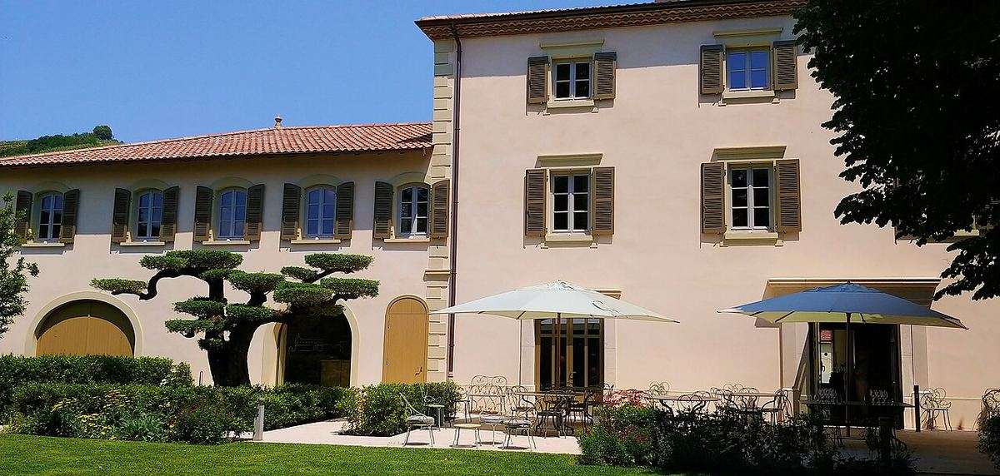

RED
Family-owned house in Ampuis founded in 1946, a benchmark for Côte-Rôtie and one of the best-known producers in the Rhône Valley.

Étienne Guigal, who had worked for years at another house in Ampuis, founded his own company in 1946 in this village at the foot of the steep Côte-Rôtie slopes. His son Marcel Guigal took over in the 1960s and brought the house wide international recognition. Today he runs it with his son Philippe.
Guigal’s fame is tied to three single-vineyard Côte-Rôties known as “La La’s”: La Mouline, La Landonne and La Turque, made from Syrah — in some cases with a small percentage of Viognier — and aged for a long period in new barrels. In 1995 the family acquired Château d’Ampuis, which gives its name to another of its Côte-Rôties.
The house has gradually expanded its holdings in the northern Rhône — Condrieu, Hermitage, Saint-Joseph, Crozes-Hermitage — and also in the south, with Château de Nalys in Châteauneuf-du-Pape. It is also one of the largest producers of Côtes du Rhône, whose red is one of the most widely available labels from the region.
The Guigal style combines concentrated fruit with long oak ageing, especially in its most ambitious wines.
The very steep slopes of Côte-Rôtie, with schist soils, mean that much of the vineyard has to be worked by hand, on terraces held up by stone walls.